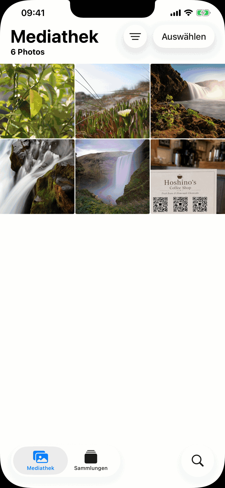

Codeleser
Codeleser scannt Barcodes und QR-Codes mit der Kamera deines iPhone oder aus beliebigen Bildern deiner Fotomediathek. Die App ist komplett kostenlos, funktioniert vollständig offline, speichert nichts in der Cloud und zeigt niemals Werbung an.
Download


Support
Hast du eine Frage, einen Fehler gefunden oder brauchst Hilfe mit der App? Meld dich. Wir lesen jede Nachricht.
Bevor du schreibst
Viele häufige Probleme werden im Handbuch und in den FAQ unten beantwortet. Ein paar schnelle Überprüfungen:
- Kamera funktioniert nicht? Gehe zu iPhone-Einstellungen → Datenschutz & Sicherheit → Kamera → Zugriff für Codeleser aktivieren.
- Verlauf nicht gefunden? Tippe auf den Tab Verlauf. Codeleser behält bis zu 10.000 Scans ohne Zeitlimit auf deinem Gerät, und du kannst nach Code-Inhalten suchen.
- Code wird nicht gescannt? Sorge für gute Beleuchtung und halte den Code ruhig. Versuche den Galerie-Modus, wenn du eine Bilddatei hast.
- App stürzt ab? Beende sie erzwungen und öffne sie erneut. Falls das Problem weiterhin besteht, schreib uns mit deinem iPhone-Modell und deiner iOS-Version.
Häufig gestellte Fragen
- Ist eine Internetverbindung erforderlich?
Nein. Codeleser funktioniert vollständig offline. - Werden meine Daten erfasst?
Nein. Es wird nichts hochgeladen. Der Scan-Verlauf wird nur auf deinem Gerät gespeichert. - Wird auf meine gesamte Fotomediathek zugegriffen?
Nein. Im Tab „Galerie" wählst du ein einzelnes Foto über die System-Fotoauswahl aus. Codeleser erhält niemals Zugriff auf deine Mediathek. - Scan fühlt sich langsam an?
Prüfe in den Einstellungen, ob Mehrere Codes scannen aktiviert ist. Multi-Code-Scannen wartet kurz, um bis zu 5 sichtbare Codes zu sammeln, bevor Ergebnisse angezeigt werden. Wenn du meistens einen Code nach dem anderen scannst und die schnellste Reaktion willst, schalte es aus. - Warum dauert der Multi-Code-Modus etwas länger?
Der Multi-Code-Modus erkennt bis zu 5 Codes gleichzeitig. Die Kamera sammelt Codes über ein kurzes Zeitfenster von Frames, um sicherzustellen, dass alle sichtbaren Codes erfasst werden, bevor das Ergebnis angezeigt wird. - Wie lange wird der Scan-Verlauf aufbewahrt?
Codeleser behält bis zu 10.000 Scans ohne Zeitlimit auf deinem Gerät. Der Verlauf enthält außerdem eine Volltextsuche über den dekodierten Wert jedes Codes. - Warum wird nicht automatisch zu einem Link navigiert?
Das ist beabsichtigt. Gefälschte oder bösartige QR-Codes kommen häufig vor, auf Parkplätzen, Restauranttischen und anderswo. Die URL vor dem Öffnen anzuzeigen gibt dir die Möglichkeit zu prüfen, ob sie sicher ist. - Kann ich wählen, welches Kameraobjektiv verwendet wird?
Ja. Tippe im Kamera-Bildschirm auf die Dreh-Taste, um durch die Objektive deines iPhones zu wechseln, oder halte sie gedrückt, um eines aus einer Liste zu wählen. Die App merkt sich deine Wahl und öffnet beim nächsten Mal dasselbe Objektiv.
Handbuch



Kamera
Der Tab „Kamera" öffnet sich und beginnt sofort mit dem Scannen. Halte dein Telefon auf einen beliebigen Barcode oder QR-Code, und die App erkennt ihn automatisch. Die Kameraerlaubnis ist erforderlich. Falls du sie noch nicht erteilt hast, wird eine Aufforderung angezeigt. Tippe auf Einstellungen öffnen und aktiviere den Kamera-Zugriff für Codeleser.
- Taschenlampe: Tippe auf die Taschenlampen-Taste, um dunkle Umgebungen auszuleuchten. Nur bei Kameras mit Blitz verfügbar.
- Kamera wechseln: Tippe auf die Dreh-Taste, um durch alle Objektive deines iPhones zu wechseln (Ultraweitwinkel, Weitwinkel, Tele und Frontkamera, je nach Modell). Halte die Taste gedrückt, um ein bestimmtes Objektiv aus der Liste zu wählen. Die zuletzt genutzte Kamera wird gemerkt und beim nächsten Mal wieder verwendet.
Galerie
Im Tab „Galerie" kannst du Codes aus einem vorhandenen Bild scannen. Tippe auf Foto auswählen, um ein beliebiges Bild aus deiner Mediathek auszuwählen. Nur das von dir ausgewählte Foto wird mit der App geteilt. Codeleser fordert keinen Zugriff auf deine gesamte Fotomediathek an.
Nach der Auswahl eines Fotos scannt die App es und zeigt das Ergebnis sofort an. Falls kein Code gefunden wird, wirst du durch einen Hinweis darüber informiert.
Verlauf
Jeder Scan wird automatisch im Tab „Verlauf" gespeichert. Codeleser behält bis zu 10.000 Scans ohne Zeitlimit auf deinem Gerät und enthält eine Volltextsuche.
- Vergangenen Scan ansehen: tippe auf eine beliebige Zeile, um das vollständige Ergebnis erneut zu öffnen.
- Eintrag löschen: wische eine Zeile nach links und tippe auf Löschen.
- Alles löschen: tippe auf das Papierkorbsymbol oben rechts.
- Quellenkennung: jeder Eintrag zeigt an, ob er von der Kamera, der Galerie oder einer Freigabe stammt.
- Suche: Gib beliebigen Text in die Suchleiste ein. Einträge werden während der Eingabe anhand des dekodierten Werts jedes Codes gefiltert.
Einstellungen
Der Tab „Einstellungen" enthält Funktionsschalter, gefolgt von Informationen zur App.
Mehrere Codes scannen
Standardmäßig hält Codeleser an, sobald es einen Code findet. Aktiviere Mehrere Codes scannen, um bis zu 5 Codes gleichzeitig zu erkennen, nützlich für Visitenkarten, Produktblätter oder Bilder mit mehreren nebeneinanderliegenden Codes. Die Kamera scannt nach der ersten Erkennung noch kurz weiter, um alle sichtbaren Codes zu erfassen, bevor die Ergebnisse angezeigt werden.
Erweiterte Details anzeigen
Aktiviere Erweiterte Details anzeigen, um technische Metadaten neben jedem Scan-Ergebnis einzublenden: QR-Version, Fehlerkorrekturlevel, Maskenmuster oder Barcode-Struktur (Start-/Stoppzeichen, Prüfziffer). Diese Informationen werden auf der Ergebnisseite und in den Zeilen des Verlauf-Tabs angezeigt.
Scan-Ergebnisse
Mit aktiviertem Erweiterte Details anzeigen in den Einstellungen erscheinen zwei zusätzliche Abschnitte auf der Ergebnisseite:
- Dekodierte Daten: die im Barcode kodierte Rohzeichenkette vor jeglicher Verarbeitung.
- Struktur: technische Aufschlüsselung des Barcodes: Start-/Stoppzeichen, Prüfziffer, Guard-Muster und ähnliche Elemente je nach Code-Typ.
Bei QR-Codes erscheinen außerdem Metadaten-Chips, die Versionsnummer, Fehlerkorrekturlevel und Maskenmuster anzeigen.
Erkennung von Tracking-Parametern
Wenn eine URL Tracking-Parameter enthält, zeigt Codeleser unterhalb der Rohdaten eine grüne Karte Ohne Tracking an. Die Karte zeigt die bereinigte URL, eine Zeile Entfernt: mit den entfernten Parametern (UTM-Tags sowie Klick-IDs von Facebook, Google Ads, Microsoft, TikTok und vielen anderen) und die Schaltflächen Kopieren / Teilen / Öffnen, die alle mit der bereinigten URL arbeiten. Du erreichst dieselbe Seite, ohne getrackt zu werden.
Aus einer anderen App scannen
Du kannst einen Code, der in einem Foto in einer anderen App erscheint (einer Nachricht, E-Mail, einem Dokumentenbetrachter oder Webbrowser), scannen, ohne diese App zu verlassen.
Über „Teilen":
- Öffne das Bild in deiner Galerie oder einer beliebigen App und tippe auf die Schaltfläche Teilen.
- Suche in der angezeigten App-Liste nach Codeleser und tippe darauf. Falls du es nicht siehst, scrolle bis zum Ende der Liste und tippe auf Mehr.
- Die App öffnet sich und scannt das Bild automatisch.
Über Aktionen:
- Öffne das Bild in deiner Galerie oder einer beliebigen App und tippe auf die Schaltfläche Teilen.
- Scrolle in der Aktionsreihe unterhalb der App-Liste und tippe auf Scan for Codes.
- Die App öffnet sich und scannt das Bild automatisch.
Homescreen-Widget
Du kannst ein Widget als größere Verknüpfung zur App zu deinem Homescreen hinzufügen. Ein Tippen darauf öffnet direkt die Kamera, bereit zum Scannen. Widgets sind in drei Größen verfügbar (klein, mittel, groß), damit du die passende für dein Homescreen-Layout wählen kannst.
- Halte einen leeren Bereich deines Homescreens gedrückt, bis die Symbole zu wackeln beginnen.
- Tippe auf die Schaltfläche + oben links.
- Suche nach Codeleser.
- Wähle eine Größe und tippe auf Widget hinzufügen.
- Du kannst es später durch langes Drücken auf das Widget und Auswahl von Widget bearbeiten in der Größe ändern.
Control Center
Control Center ist das Fenster, das erscheint, wenn du von der oberen rechten Ecke des Bildschirms nach unten wischst. Du kannst dort eine Codeleser-Schaltfläche hinzufügen, um die Kamera mit einem einzigen Tippen von überall aus zu starten, auch vom Sperrbildschirm oder während du eine andere App verwendest.
- Wische von der oberen rechten Ecke nach unten, um Control Center zu öffnen.
- Tippe auf die Schaltfläche +, um den Bearbeitungsmodus aufzurufen.
- Suche Codeleser in der Liste und tippe darauf, um es hinzuzufügen.
- Du kannst es im Bearbeitungsmodus durch Ziehen neu positionieren und in der Größe ändern.
Unterstützte Code-Typen
| Code | Hinweise |
|---|---|
| QR Code | Häufigster 2D-Code. Verwendet für URLs, WLAN, Kontakte und mehr |
| Micro QR | Kompakte Variante des QR Code für kleine Etiketten mit begrenztem Platz |
| Aztec | Verwendet auf Bordkarten und Fahrkarten |
| Data Matrix | Verbreitet in Fertigung, Gesundheitswesen und Logistik |
| PDF417 | Verwendet auf Führerscheinen, Bordkarten und Versandetiketten |
| Micro PDF417 | Kompaktes PDF417 für kleine Artikel wie Pharmaverpackungen |
| EAN-8 | Kurzer Einzelhandels-Barcode für kleine Produkte |
| EAN-13 | Standard-Barcode auf den meisten Konsumgütern weltweit |
| UPC-E | Kompakter Barcode für kleine US-/kanadische Einzelhandelsverpackungen |
| Code 39 | Einer der ältesten Barcodes, verbreitet in industriellen Umgebungen |
| Code 93 | Nachfolger von Code 39 mit höherer Datendichte |
| Code 128 | Hochdichter Barcode, weit verbreitet in Logistik und Versand |
| ITF-14 | 14-stelliger Barcode auf Wellpappe-Versandkartons |
| Codabar | Verwendet in Bibliotheken, Blutbanken und einigen Versandunternehmen |
| GS1 DataBar | Kompakter Einzelhandels-Barcode für kleine Artikel wie Frischwaren |
| GS1 DataBar Expanded | Erweiterte Variante mit zusätzlichen Daten wie Gewicht und Ablaufdatum |
Nicht unterstützt:
| Code | Hinweise |
|---|---|
| EAN-2 / EAN-5 (Add-ons) | Kurze Ziffernergänzungen, die an EAN-13 angehängt werden, verwendet für Zeitschriftennummern und Buchpreise |
| rMQR | Rechteckiger Micro QR, eine neuere kompakte QR-Variante für schmale Etiketten |
| MaxiCode | 2D-Punktmatrixcode, der von UPS auf Versandetiketten verwendet wird |
| SP Code | Japanischer Barrierefreiheits-Barcode, der gesprochene Audiodaten kodiert |
| Postbarcodes | 4-Zustands-Postbarcodes der nationalen Postdienste (USPS Intelligent Mail, Royal Mail, Australia Post, Japan Post und andere) |
| Proprietäre App-Codes | Benutzerdefinierte visuelle Codes, die nur von der herausgebenden App gescannt werden können |
Demo-Codes
Scanne diese direkt von diesem Bildschirm mit der Kamera, oder mache einen Screenshot und verwende den Galerie-Tab.
 | QR Code URL mit Tracking-Parametern https://hoshinosoftware.com?utm_source=review&utm_campaign=demo |
 | QR Code Beschrifteter Link (URL in zweiter Zeile) CodeReader https://hoshinosoftware.com/codereader/ |
 | QR Code App-Deep-Link (scheme://) itms-apps://apps.apple.com/app/id6761772999 |
 | QR Code App-Deep-Link ohne installierten Handler noappopensthis://demo |
QR Code HTTP mit Tracking und kodiertem Text http://ja.wikipedia.org/wiki/QR%E3%82%B3%E3%83%BC%E3%83%89?utm_source=qr | |
 | QR Code WLAN-Netzwerk WIFI:S:example-wifi;T:WPA;P:example-password;; |
 | QR Code E-Mail mailto:test@example.com |
 | QR Code Kontakt (vCard) BEGIN:VCARD VERSION:3.0 N:Last;First FN:First Last ORG:Company TITLE:Job Title ADR:;;Street;City;CA;90401;USA TEL;WORK;VOICE: TEL;CELL:+1234567890123 TEL;FAX: EMAIL;WORK;INTERNET:example@example.com URL:https://example.com END:VCARD |
 | Micro QR Kompakter QR für kleine Etiketten HELLO |
 | Aztec (Full) Transport / Bordkarten AZTEC-DEMO-CODE |
 | Aztec (Compact) Kompakte Variante für kleine Etiketten AZTEC-DEMO-CODE |
 | Data Matrix (Square) Fertigung / Gesundheitswesen DATAMATRIX |
 | Data Matrix (Rectangular) Rechteckige Variante für schmale Etiketten DATAMATRIX |
 | PDF417 Ausweisdokumente / Versandetiketten PDF417 SAMPLE DATA |
 | Micro PDF417 Kompaktes PDF417 für kleine Artikel MICROPDF417 SAMPLE DATA |
 | EAN-13 Einzelhandels-Barcode 5901234123457 |
 | UPC-E Kompakter Einzelhandels-Barcode (USA/Kanada) 01234565 |
 | Code 128 Logistik / Versand CODE-128-DEMO |
 | ITF-14 Versandkarton-Barcode 12345678901231 |
 | GS1 DataBar Kompakter Barcode für kleine Artikel 0112345678901231 |
Rechtliches
Datenschutzerklärung
Letzte Aktualisierung: Mai 2026
Keine Käufe oder Zahlungen
Codeleser ist komplett kostenlos, ohne In-App-Käufe. Wir erhalten niemals deine Apple-ID, deine Zahlungsmethode oder andere Zahlungsinformationen.
Drittanbieterdienste
Codeleser verwendet keine Analyse-, Werbe- oder Tracking-Dienste von Drittanbietern. Es werden keine Daten an Dritte weitergegeben.
Datenschutz für Kinder
Da keine personenbezogenen Daten erhoben werden, ist Codeleser für Benutzer jeden Alters sicher und erfüllt den COPPA sowie vergleichbare Vorschriften weltweit.
Änderungen dieser Erklärung
Wir können diese Datenschutzerklärung von Zeit zu Zeit aktualisieren. Änderungen werden sofort nach der Veröffentlichung wirksam. Wir empfehlen, diese Seite regelmäßig zu überprüfen.
Kontakt
Bei Fragen zu dieser Datenschutzerklärung: support [at] hoshinosoftware [dot] com
Nutzungsbedingungen
Letzte Aktualisierung: April 2026
Annahme der Bedingungen
Durch das Herunterladen oder die Nutzung von Codeleser stimmst du diesen Nutzungsbedingungen zu. Wenn du nicht einverstanden bist, verwende die App bitte nicht.
Lizenz
Hoshino Software gewährt dir eine persönliche, nicht übertragbare und nicht ausschließliche Lizenz zur Nutzung von Codeleser auf deinen Apple-Geräten gemäß diesen Bedingungen und den App Store-Nutzungsbedingungen von Apple.
Zulässige Nutzung
Du darfst Codeleser nur für legale Zwecke verwenden. Du stimmst zu, die App nicht in einer Weise zu nutzen, die gegen geltende Gesetze oder Vorschriften verstößt.
Keine Gewährleistung
Codeleser wird „wie besehen" ohne jegliche ausdrückliche oder stillschweigende Gewährleistung bereitgestellt. Wir garantieren nicht, dass die App fehlerfrei, ununterbrochen oder für einen bestimmten Zweck geeignet ist.
Haftungsbeschränkung
Im größtmöglichen gesetzlich zulässigen Umfang haftet Hoshino Software nicht für direkte, indirekte, zufällige, besondere oder Folgeschäden, die aus der Nutzung oder Nichtnutzbarkeit von Codeleser entstehen.
Änderungen dieser Bedingungen
Wir können diese Nutzungsbedingungen von Zeit zu Zeit aktualisieren. Die fortgesetzte Nutzung der App nach der Veröffentlichung von Änderungen gilt als Zustimmung zu den überarbeiteten Bedingungen.
Anwendbares Recht
Diese Bedingungen unterliegen dem Recht der Gerichtsbarkeit, in der Hoshino Software tätig ist.
Kontakt
Bei Fragen zu diesen Nutzungsbedingungen: support [at] hoshinosoftware [dot] com